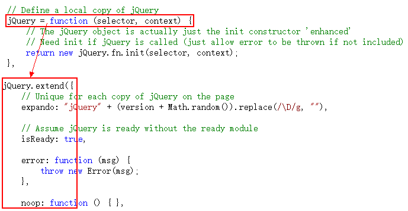
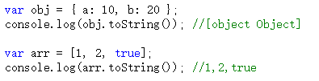
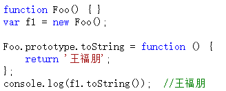
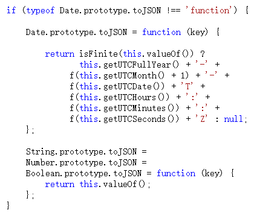

原型的灵活性
在Java和C#中，你可以简单的理解class是一个模子，对象就是被这个模子压出来的一批一批月饼（中秋节刚过完）。压个啥样，就得是个啥样，不能随便动，动一动就坏了。
而在javascript中，就没有模子了，月饼被换成了面团，你可以捏成自己想要的样子。
首先，对象属性可以随时改动。
对象或者函数，刚开始new出来之后，可能啥属性都没有。但是你可以这会儿加一个，过一会儿在加两个，非常灵活。
在jQuery的源码中，对象被创建时什么属性都没有，都是代码一步一步执行时，一个一个加上的。

其次，如果继承的方法不合适，可以做出修改。

如上图，Object和Array的toString()方法不一样。肯定是Array.prototype.toString()方法做了修改。
同理，我也可以自定义一个函数，并自己去修改prototype.toString()方法。

最后，如果感觉当前缺少你要用的方法，可以自己去创建。
例如在json2.js源码中，为Date、String、Number、Boolean方法添加一个toJSON的属性。

如果你要添加内置方法的原型属性，最好做一步判断，如果该属性不存在，则添加。如果本来就存在，就没必要再添加了。